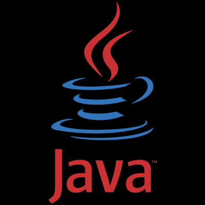
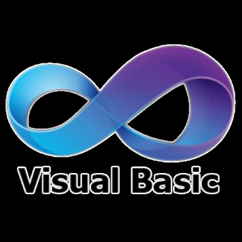

Python
C

C#

Java

JavaScript

Visual Basic
Fortran
PHP
Technical Experience & Tools
Systems & Low-Level Development
Experience working close to hardware and system internals, including Assembly, low-level C programming, and development environments such as devkitPPC + GRRLIB for Wii homebrew. These tools were used to better understand memory management, performance, and how software interacts with hardware at a foundational level.
Backend Development & Data Systems
Built and worked with backend systems using Node.js, PHP, and relational databases with SQL. Experience includes designing APIs, handling data flow, and structuring applications for scalability and maintainability.
Frameworks & Application Development
Developed desktop and application-based solutions using .NET Framework, JavaFX, and object-oriented design principles. Focused on building maintainable architectures and responsive user interfaces.
AI & Modern Development Tools
Explored AI development and tooling through platforms such as Ollama and Hugging Face. Worked with local models, experimentation workflows, and integrating AI capabilities into projects.
Automation & Productivity Tools
Experience with automation and productivity tools including Power Automate, VBA, and advanced usage of Microsoft Office (Excel, Word). Built scripts and workflows to streamline tasks and improve efficiency.
Development Environment
Primary development performed in Visual Studio Code and Visual Studio, with experience managing multi-language projects, debugging workflows, and integrating various tools into a cohesive development environment.